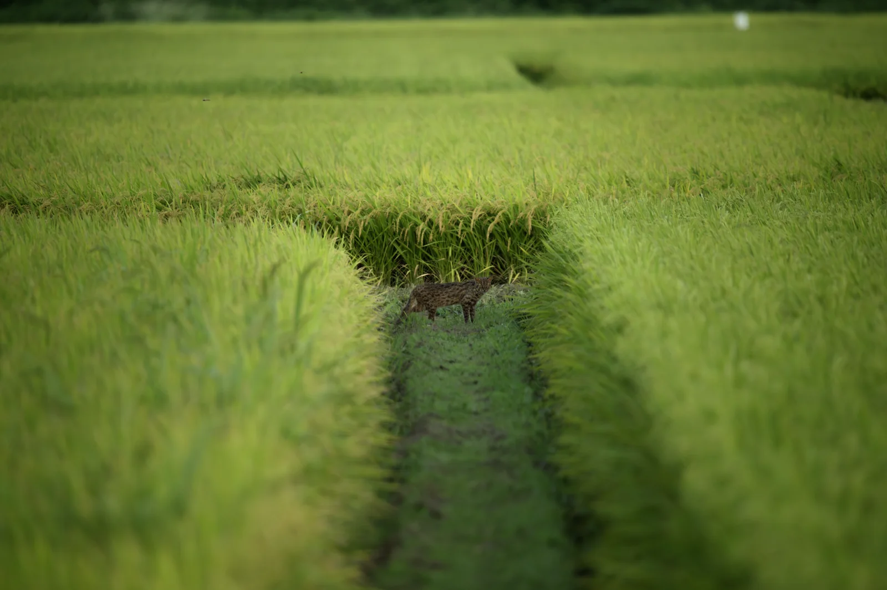

調査映像をローカルで解析
アプリとモデルの準備後は、撮影データをクラウドに送らずに解析できます。
Products & services
撮影データを解析するWildCatcherと、環境アセスメントの記録・報告をつなぐWildpass。目的に合わせてご案内します。
カメラトラップの画像・動画を、
PC上で解析・確認・出力。
動物・人・車両の検出に加え、種分類、結果確認、ラベル修正、各種データ出力をまとめたデスクトップアプリです。
Windows / macOS · 14日間トライアルあり
種分類・PDFなどはライセンスにより利用範囲が異なります。

アプリとモデルの準備後は、撮影データをクラウドに送らずに解析できます。
検出・分類した記録をフィルターで確認し、ラベルの修正と履歴を残せます。
CSV・Excelなどの標準形式に対応。ProではPDFや対応する外部ツール向け出力も利用できます。
Environmental impact assessment toolkit
環境アセスメント（EIA）に携わるチームのための業務ワークスペースを開発しています。
案件ごとの工程・業務、現場の観察・測定、写真・資料、担当者によるレビュー、寄せられた意見への対応をまとめ、編集可能なWord報告書につなげます。
現在は実務担当者と確認するパイロット検証段階です。導入条件・提供時期・費用は、対象業務と検証範囲を確認したうえで個別にご案内します。
Wildpassについて相談する業務の担当・期限を整理し、観察、測定、写真・資料を関連付けて保存。事前準備した端末でのオフライン記録にも取り組んでいます。
記録と原本資料を関連付け、確認者のレビューと変更履歴を残します。意見への回答や対応先も一つの案件で管理します。
章ごとの文章と記録からWord報告書を生成。原本資料をまとめたZIP出力と保存版の管理に対応する構成です。
法令・条例の適用判断、種の同定、影響の予測・評価、行政協議や提出手続きは実務担当者が行います。Wildpassが法令適合や審査通過を自動判定することはありません。
オフライン利用には事前のログインとデータ準備が必要です。端末への保存とチームへの共有は別の状態として扱います。WildCatcherとは独立した製品です。
Consulting
ソフトウェアの導入と、画像・動画解析の運用を支援します。
調査地や対象種、手元のデータ量・品質を確認し、モデルの評価方法と運用範囲を整理します。特化モデルの開発は個別のお見積りとなります。
PC環境、利用人数・台数、想定する業務、既存の記録・報告書の形式をお知らせください。評価利用の進め方と必要な構成をご案内します。